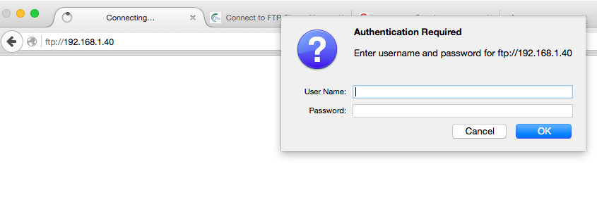

what is file transfer?
File transfer is the process of copying file(s) between servers in secure way.
Methods of tranfering the files
Mainly, we will discuss the four common ways of doing it.
Scp
Sends the file to server
scp file1.txt tomuser@192.182.151.1
ping-MacBook-Air:local $ scp file1.txt tomuser@52.1.3.40:/var/tmp
tomuser@52.32.3.41's password:
file1.txt 100% 0 0.0KB/s 00:00
ping-MacBook-Air:test $
Scp user@ipaddress:hostpath localpath
Pull file from the server.In the given example file1 is pulled from server to the Desktop of localmachine.
scp tomuser@ipaddres:/var/tmp/file1.txt ~/Desktop
ping-MacBook-Air:test $ scp tomuser@52.32.3.41:/var/tmp/file1.txt ~/Desktop/test tomuser@52.32.3.41's password: file1.txt 100% 0 0.0KB/s 00:00 ping-MacBook-Air:test $ ls file1.txt bikrams-MacBook-Air:test $
Scp -C
Sends the file compressing the file only in network.It is the faster process.
scp -C file1.txt tomuser@192.182.151.1
Scp -p 2222
Sends the file specifying the ports
scp -p 2222 tomuser@ipaddres:/var/tmp
Lets install and setup NFS on server
yum install nfs* -y cd /etc/init.d/ ./rpcbind start ./nfs start mkdir /tomdirectory vi /etc/exports /tomdirectory 192.168.1.40(rw,sync) --> Here ip is the client ipaddress, and tomdirectpry is just the file system. ## if you want to share the directory to more then 1 node, /tomdirectory *(rw,sync) ## rw : the file system is writable,client can read and write the shared files. ## ro : the file system is exported read-only.Client can only read the file ##sync : reply clients after data have been stored to stable storage; this is the default exportfs -a /etc/init.d/nfs restart Allow the port on iptables rpcinfo -p | grep nfs
Lets configure the settings on the client node.
yum install nfs*
cd /etc/init.d/
./rpcbind start
./nfs start
mkdir /bobdirectory
showmont -e
You might run into firewall issue. stop the firewall rules in server.
clnt_create: RPC: Port mapper failure - Unable to receive: errno 113 (No route to host)
service iptables stop
Allow the firewalls and ports, if you want NFS to make work with firewalls
grep LOCKD_UDPPORT /etc/sysconfig/nfs grep LOCKD_TCPPORT /etc/sysconfig/nfs grep MOUNTED_PORT /etc/sysconfig/nfs
Uncommnet this line and allow the prots 32803,32769,and 892 in /etc/sysconfig/nfs
vi /etc/sysconfig/iptables
-A INPUT -m state --state NEW -p tcp -m multiport --dport 111,892,2049,32803 -j ACCEPT -A INPUT -m state --state NEW -p udp -m multiport --dport 111,892,2049,32769 -j ACCEPT
service iptables restart;service nfs restart
Server
client
On Server
[root@client /]# cd /tomdirectory [root@client /]# touch file1.txt file2.txt
This two file would be visible in client machine On Client
[root@client2 /]# cd /bobdirectory [root@client2 /]# ls file1.txt file2.txt [root@client2 /]#
Mounted file system is temporary, it gets erased after you reboot the machine
To make it permanent, add the entry in /etc/fstab
/tomdirectory /bobdirectory nfs defaults 0 0
chkconfig --levels 235 nfs on
Install and configure ftp on server
1)install ftp with yum command
# yum install vsftpd ftp -y
2)configuring the settings
# vi /etc/vsftpd/vsfptd.conf
anonymous_enable=NO Uncomment ascii_download_enable=YES ftpd_banner=Welcome to ping linux FTP service.
Add to the bottom of the file
use_localtime=YESAutomatically start vsftpd on every reboot:
# service vsftpd start
# chkconfig vsftpd on
Selinux restricts the user to log in to ftp server
# setsebool -P ftp_home_dir on
Allow the port 21 for ftp
-A INPUT -m state --state NEW -m tcp -p tcp --dport 21 -j ACCEPT
Service iptables restart
Sharing files can be kept on /var/ftp/pub/
touch file.txt file2.txt
Now we can access those files from browser
In browser, enter the ftp://ipaddressofserver
ftp://192.168.1.40
To login to the browser using username and passowrd,make the following changes on the server
anonymous-enable=NO in /etc/vsftpd/vsftpd.conf
# useradd name
# passwd name
Firezilla is the GUI tool to transfer files back and forth.You can download it from firezilla site
Provide the hostname, username and password to get connected to the server
Authencating with the credentials
Firezilla directory structure
On the left hand side, its the local machine directory, and on the righ hand site, its the remote server directory. You can drag and drop the files between two servers directory.
You can connect to multiple server at the same time, by opening new tab on the same firezilla